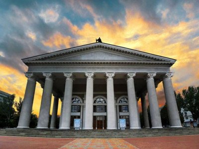
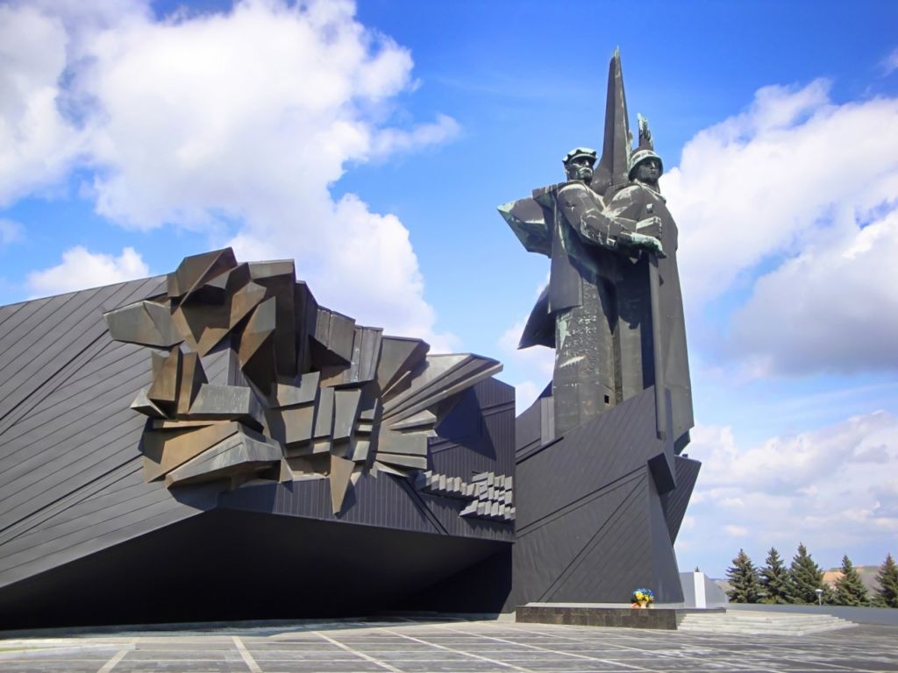
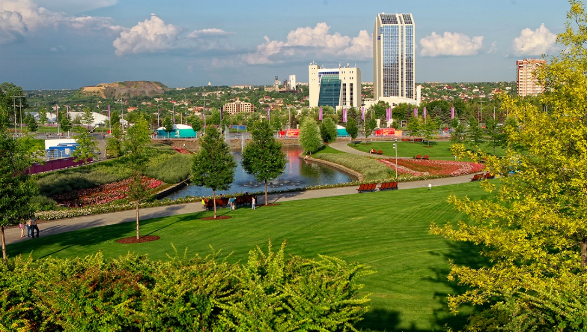
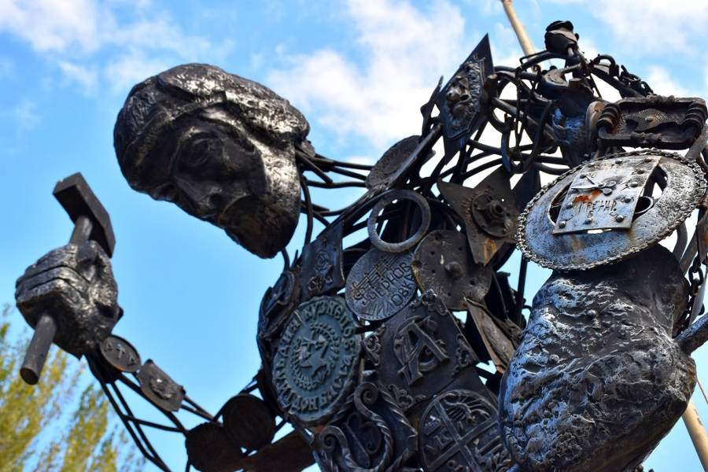
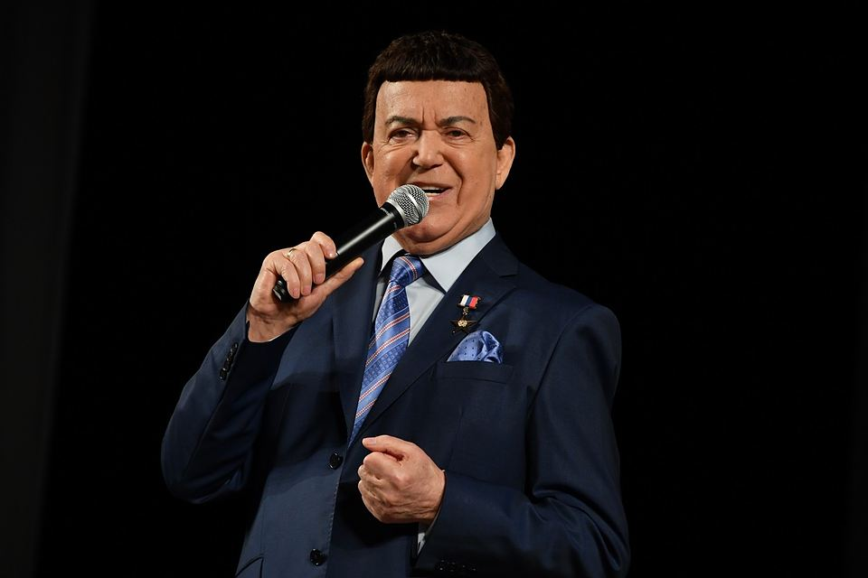
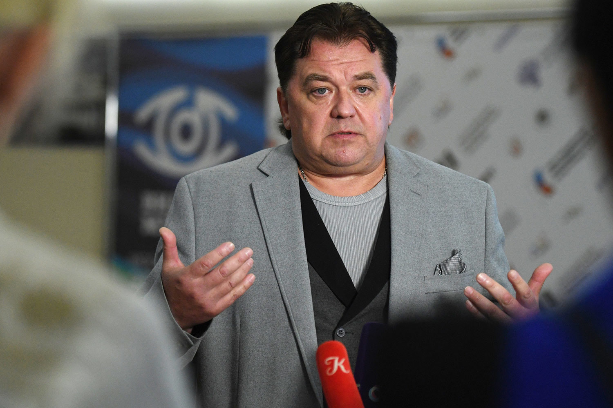

ДОСТОПРИМЕЧАТЕЛЬНОСТИ

Донецкий музыкально-драматический театр
Белокаменный музыкально-драматический театр на ул. Артема является гордостью города. В 1961 году театр открыл двери для зрителей. В театре есть шесть сценических площадок: основная и малая сцены, красный зал, театральная гостиная, экспериментальная и новая сцена. В репертуаре отечественные и зарубежные пьесы, премьеры мировой драматургии, детские спектакли и современные постановки.

Монумент «Освободителям Донбасса»
г. Донецк, Парк культуры и отдыха города Донецка
В 1984 году был открыт монумент "Освободителям Донбасса" в парке имени Ленинского комсомола в Киевском районе. Этот комплекс посвящен всем солдатам, которые освобождали Донбасс от фашистов. Постамент монумента выполнен из черного гранита, а фигуры освободителей изготовлены из цветной меди. В 2000 году к монументу были добавлены стелы с фамилиями героев. Возле памятника установлена площадка с военной техникой. Также рядом с комплексом установлен колокол весом 850 кг.

Парк культуры и отдыха города Донецка (Киевский район)
г. Донецк, Парк культуры и отдыха города Донецка (Киевский район)
Парк – любимое место отдыха жителей и гостей Донецка. Удобные дорожки, благоустроенные клумбы, уютные скамейки для отдыха и зеленые газоны, украшенные яркими цветами и оригинальными клумбами. Настоящей гордостью парка весной становятся цветущие сакуры – японские вишни.

Парк кованных фигур
Парк кованых фигур – уникальный музей под открытым небом, созданный в 2001 году и не имеющий аналогов в мире. На территории в 2,5 га установлено свыше 230 шедевров кузнечного мастерства, включая неповторимые кованые экспонаты и впечатляющие тематические композиции.
ДЕЯТЕЛИ КУЛЬТУРЫ

Кобзон Иосиф Давыдович. Эстрадный певец, музыкально-общественный деятель.
Родился в г. Часов Яр. Заслуженный артист РСФСР (1973 г.), народный артист РСФСР (1980 г.), народный артист СССР (1987 г.), лауреат Государственной премии (1984 г.). Депутат Государственной Думы России. Герой Донецкой Народной Республики (2015 г.), народный артист Донецкой Народной Республики (2015 г.). Герой Труда России (2016 г.).

Вадим Яковлевич Писарев. Артист балета.
Родился в 1965 г. в Донецке. Артист балета, хореограф-постановщик. Лучший танцор Европы 1995 г. (награда ЮНЕСКО). Сейчас – художественный руководитель Донецкого государственного академического театра оперы и балета.